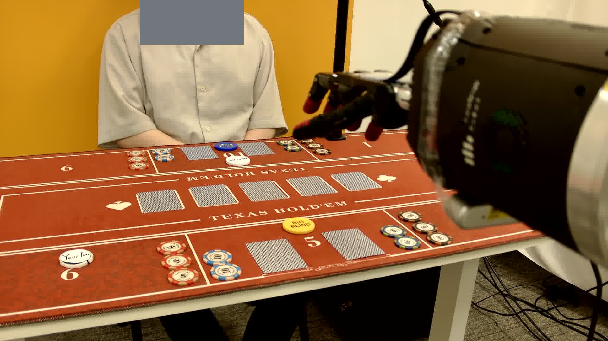
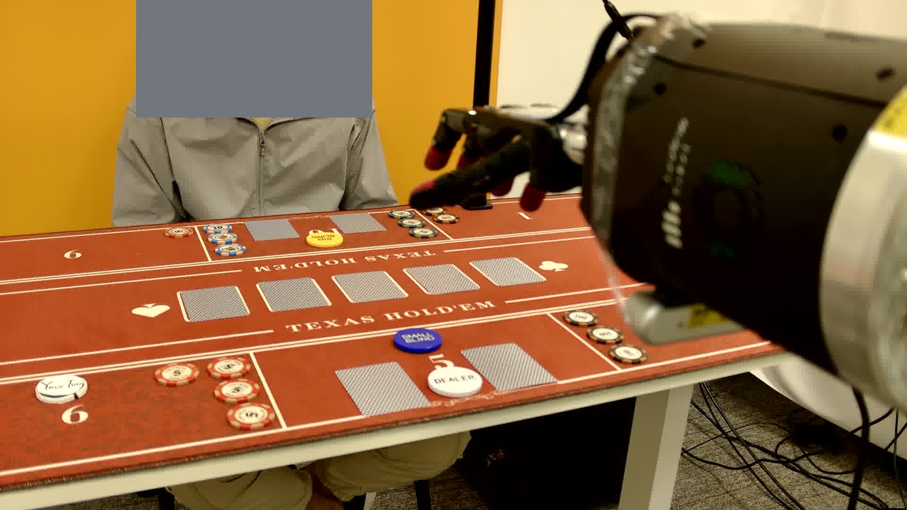
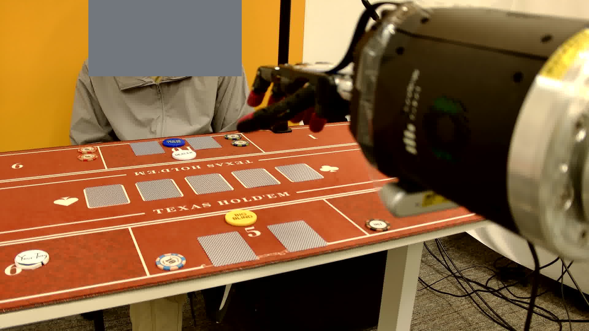

States
Trajectory length. Hands folded at preflop are short; hands reaching the river or showdown are long.
System-level Evaluation
System evaluation composes GPT 5.5 (perceiver + main agent), deterministic routing, and the pi0 dexterous policy into full hand-level rollouts on the physical table. Unlike the perception bench—which isolates visual state parsing—the system evaluation closes the loop: every captured state feeds back into perception, routing, and physical execution. This page presents the three released case-study trajectories with per-state agent-view captures, predicted parsed states, and operational counters.

Protocol
At each loop step the agent captures an image, parses it into structured game state, and routes through deterministic workflow gates. Physical motion is dispatched only when the scene is stable and an executable primitive is needed; otherwise the router handles waiting, verification, continuation of pending multi-atom sequences, and retryable recovery.

Operational Counters
These three trajectories are case studies, not a statistically powered estimate. Each row reports how many states the system captured, how many were agent-level primitives versus dexterous-policy dispatches, and how many were spent waiting, requesting human help, or in recovery.
| Agent | Policy | Trajectory | States | AP | DPP | WA | HL | RC | LAP | LDP |
|---|---|---|---|---|---|---|---|---|---|---|
| GPT 5.5 | pi0 | (i) | 22 | 8 | 7 | 7 | 2 | 1 | view_card(L) | pick_up_left |
| GPT 5.5 | pi0 | (ii) | 54 | 13 | 22 | 26 | 0 | 1 | collect_winnings | push_100 |
| GPT 5.5 | pi0 | (iii) | 23 | 8 | 10 | 7 | 0 | 1 | call | pick_up_left |
Trajectory length. Hands folded at preflop are short; hands reaching the river or showdown are long.
Dispatched agent primitives (high-level decisions) and dexterous-policy primitives (physical motor commands). Reflects trajectory complexity.
Wait-branch count. Elevated WA suggests over-sensitivity to scene motion or conservative completion/stage-transition judgment.
Human-help escalations and recovery dispatches. HL marks unrecoverable states; RC marks retryable primitive failures.
Agent primitive occupying the most consecutive states. Identifies agent-level bottlenecks such as stuck multi-atom sequences.
Dexterous-policy primitive occupying the most consecutive states. Pinpoints where physical execution is slow or repeatedly fails verification.
Trajectory Previews



Label Legend
view_card, raise, check, call,
all_in, show_card, collect_winnings—the
main agent selects a new primitive.
wait (scene), wait (acting), wait (turn)—the
router pauses because the scene is unstable, the robot is still moving, or it is
the opponent's turn.
cont., cache hole card, verify,
complete, retry, end—deterministic
routing advances or closes a pending primitive.
request_human—the agent escalates when the scene cannot be resolved
automatically (e.g. a misplaced card).